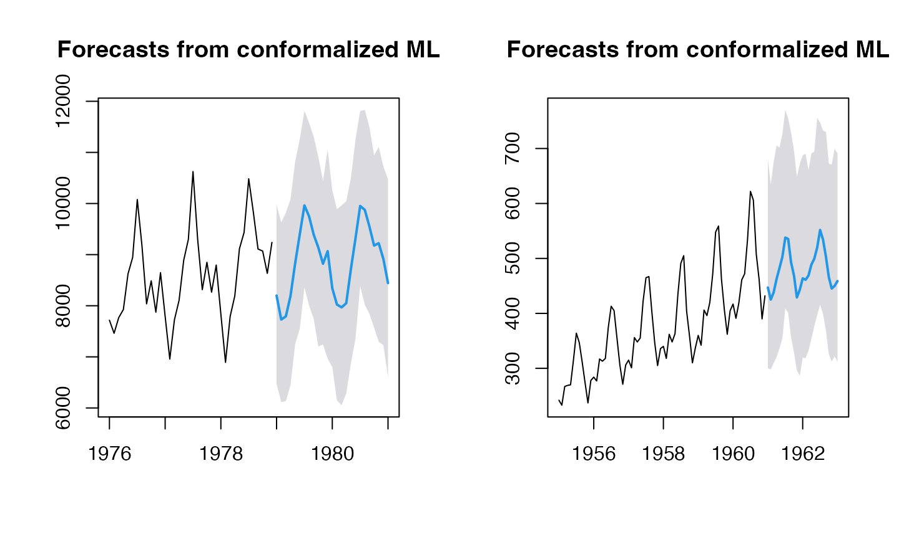

Conformalized Forecasting using Machine Leaning models
conformal-ml.Rmd
res <- ahead::mlf(USAccDeaths, h=10L, lags=15L, type_pi="surrogate", B=250L)## Registered S3 method overwritten by 'quantmod':
## method from
## as.zoo.data.frame zoo
plot(res)
res <- ahead::mlf(USAccDeaths, fit_func = glmnet::cv.glmnet, h=15L, lags=15L,
type_pi="kde", B=250L) ## Warning: Option grouped=FALSE enforced in cv.glmnet, since < 3 observations per
## fold
## Warning: Option grouped=FALSE enforced in cv.glmnet, since < 3 observations per
## fold
plot(res)
## Point Forecast Lo 95 Hi 95
## Jan 1979 7885.369 6549.217 9161.012
## Feb 1979 7994.413 6786.617 9313.743
## Mar 1979 8288.005 6982.737 9780.596
## Apr 1979 8944.135 7577.653 10165.216
## May 1979 8859.941 7410.182 10251.093
## Jun 1979 9172.114 7644.035 10520.772
## Jul 1979 9330.366 8002.247 10623.247
## Aug 1979 9745.846 8494.873 10953.744
## Sep 1979 10110.171 8881.220 11317.226
## Oct 1979 9285.259 7846.087 10593.665
## Nov 1979 8862.986 7561.907 9991.027
## Dec 1979 8267.721 6741.440 9550.401
## Jan 1980 7894.621 6491.060 9131.740
## Feb 1980 7694.869 6419.219 8996.968
## Mar 1980 8175.129 6808.683 9377.955
plot(res)